Chat
Talk to your agent, steer a live run mid-flight, and never lose a turn to a reload.
v5 · runs on your machine
Pi Scope is a control room for autonomous coding agents. Every message, tool call, shell command and file edit streams into a live dashboard you can watch over SSE — or replay later like a movie of your agent's brain. It runs locally, needs no account, and uploads nothing.
the problem
Your agent reads files, rewrites functions, runs test suites and hits APIs. What you are left with afterwards is a scrollback buffer: no timeline, no tool calls with exit codes, no diff, no cost, and no way back in.
A finished run leaves text, not a record. The tool call that broke everything is 400 lines up, in a window you already closed.
Cloud LLM tracers want your prompts, your code and your file paths inside their account. That should be a decision, never a default.
A trace tells you what happened. It can't open a shell on that host, fix the agent's diff, or stop the run while it is still running.
Scrolling back through a terminal is not a timeline. Timing, tokens and cost per turn are simply not in there.
introducing
One server on your machine ingests the agent's event stream, writes it to a single SQLite file, and broadcasts it to the browser over Server-Sent Events. The same screen that shows you the run also gives you a real shell, an editable diff view and git checkpoints — so when the agent goes sideways, you fix it where you saw it.
↑ every line is a real event type · captured from a live session by docs/seed-demo.mjs
every view is a plugin
Enable or disable any of them from Settings. Server-side, the routes that feature owns stop answering — so turning one off is a real uninstall, not a hidden button.
Talk to your agent, steer a live run mid-flight, and never lose a turn to a reload.
The complete forensic timeline — every event, expandable to its raw JSON payload.
Your agent team as a pixel-art floor; a dispatch literally walks the task over.
Turns, cost and tokens side by side, with a strip that exposes the slow call.
Wire coding-agent harnesses into a graph on a canvas, gate it, and run it server-side.
A real bash shell on the agent's host, over WebSocket, in the browser.
Side-by-side diffs against HEAD — and the new side is editable and savable.
Label a moment before the agent goes wild, restore it later with one click.
Stage, commit, push, branches, stashes, submodules and a commit-lane graph.
Agents, teams, models, keys and extensions — mirrored and editable from the browser.
Drop a folder with a plugin.json and you get a view, routes, hooks and storage.
A purpose-built mobile layout — sessions, transcript, composer — on the same server.
feature tour
Every image below was captured from a live Pi Scope dashboard with an actual agent session — no mockups, no magic. Dark theme by default; light is one click away.
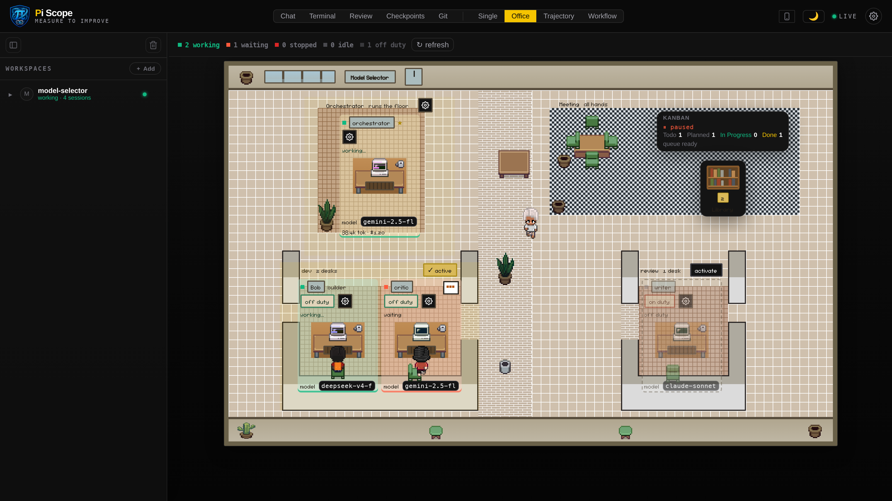
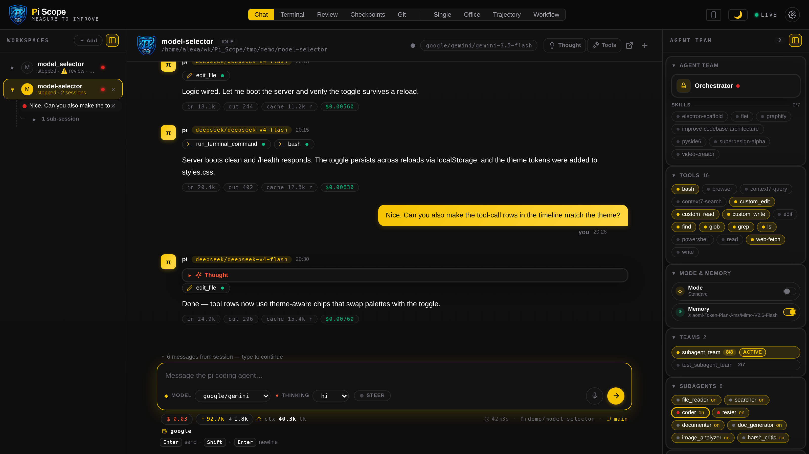
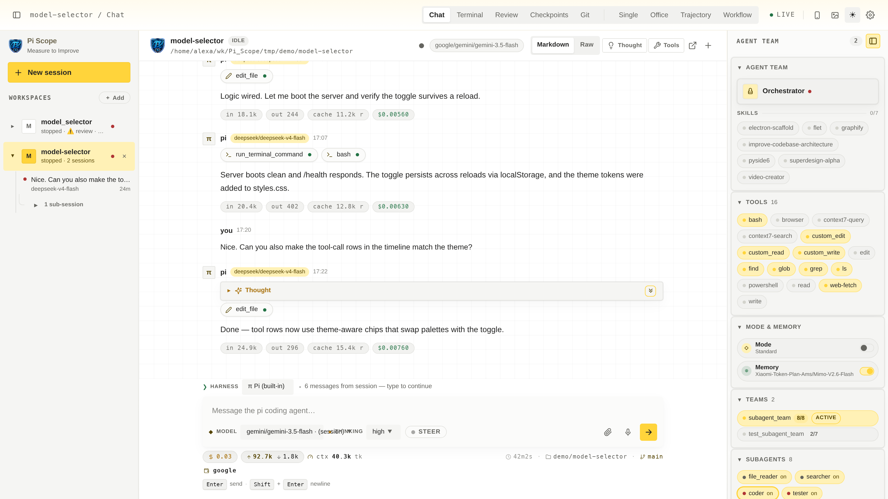
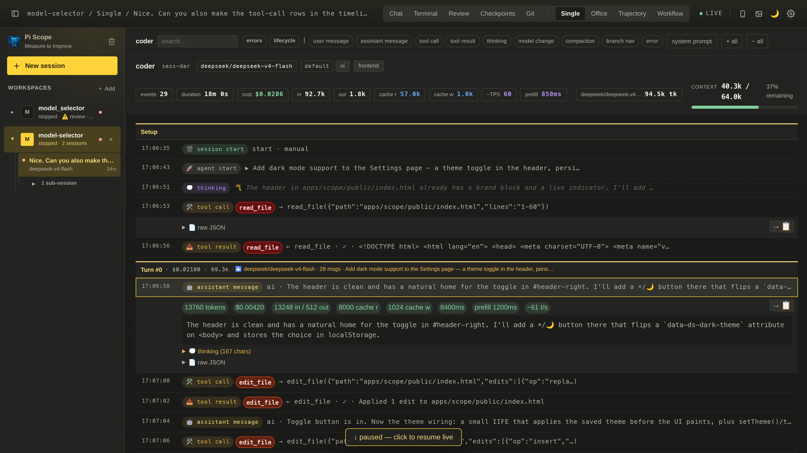
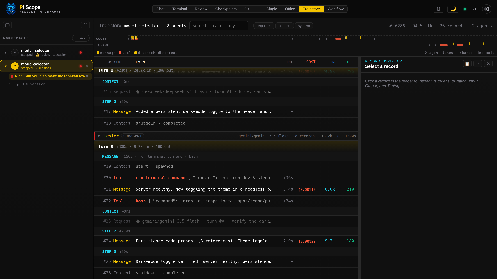
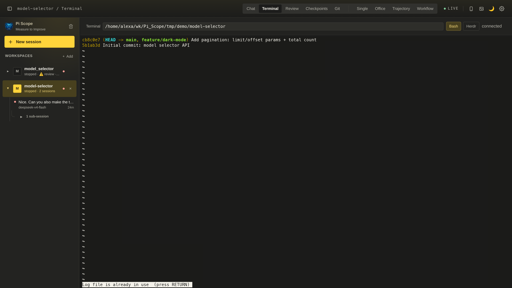
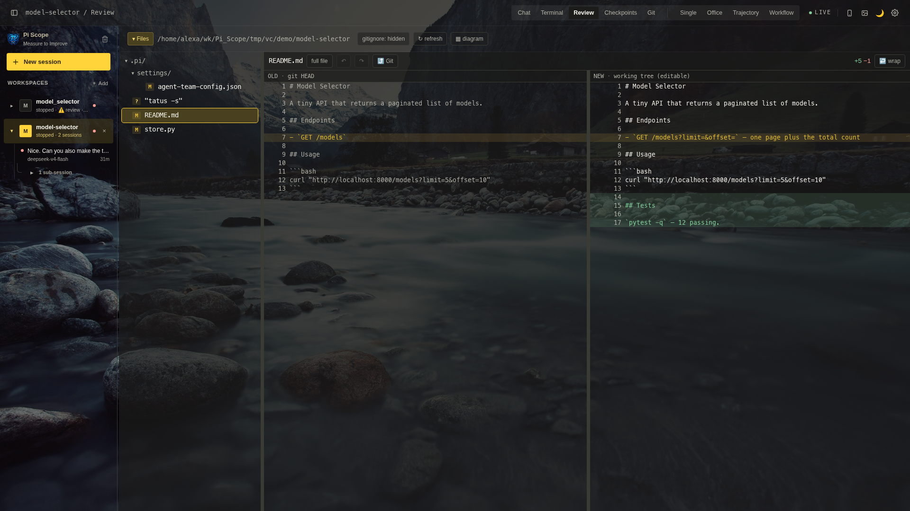
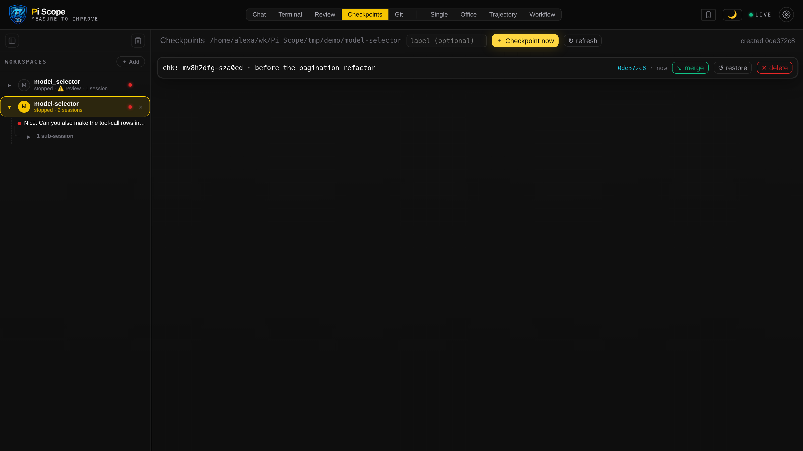
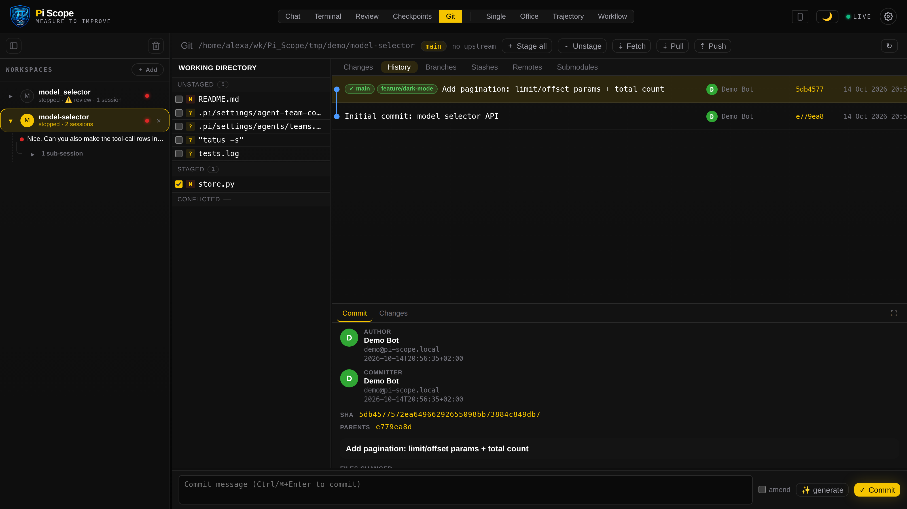
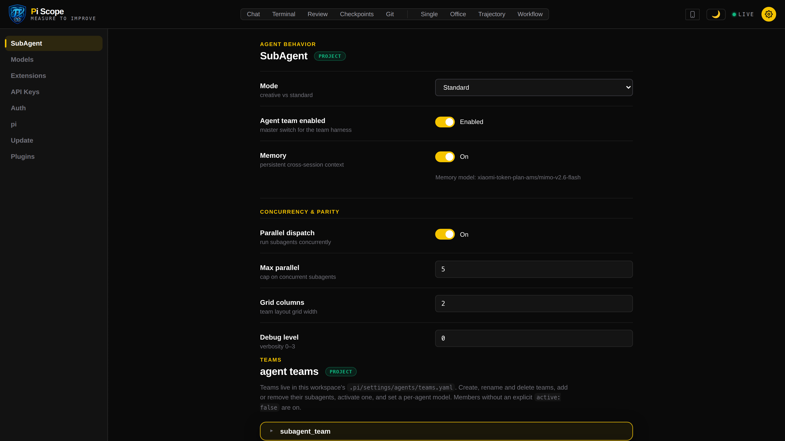
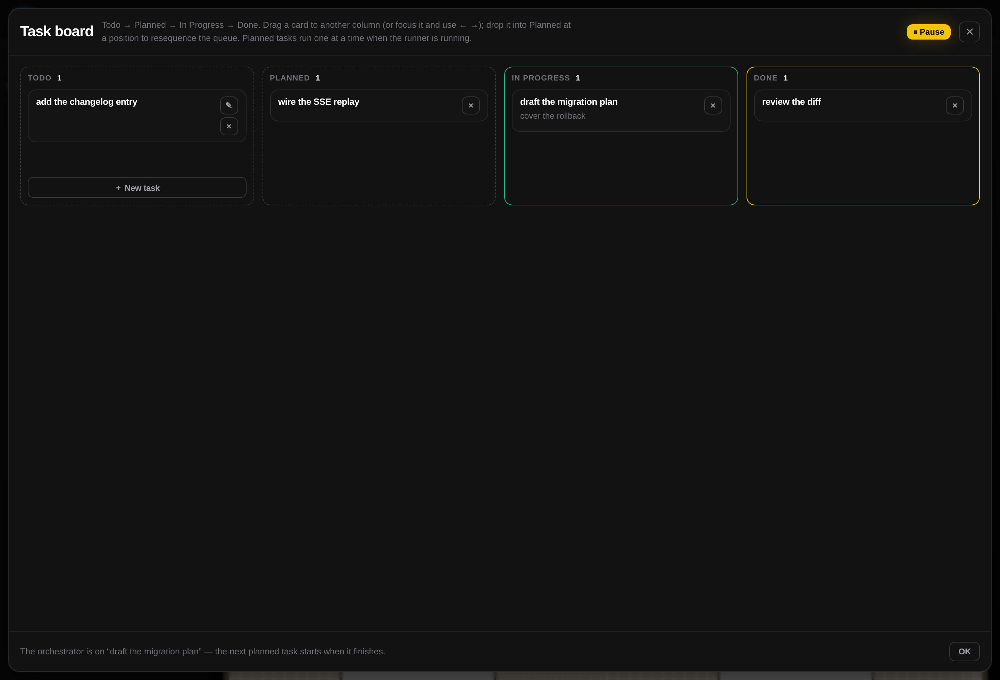
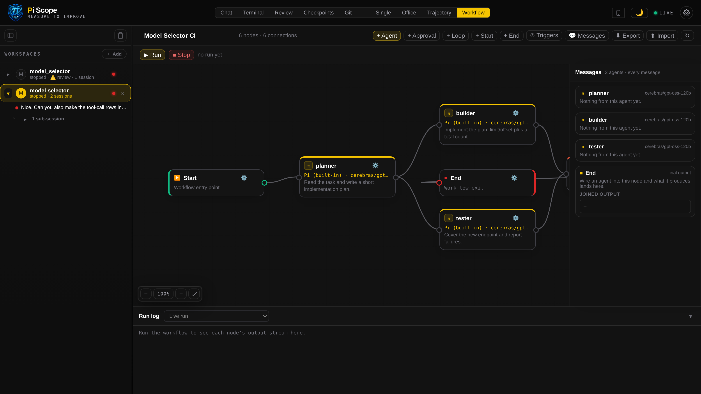
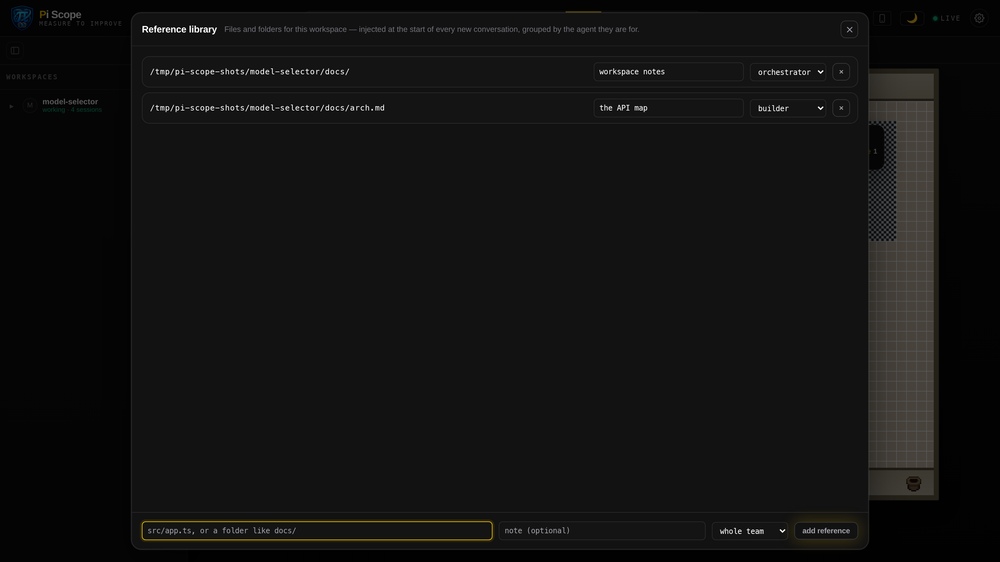
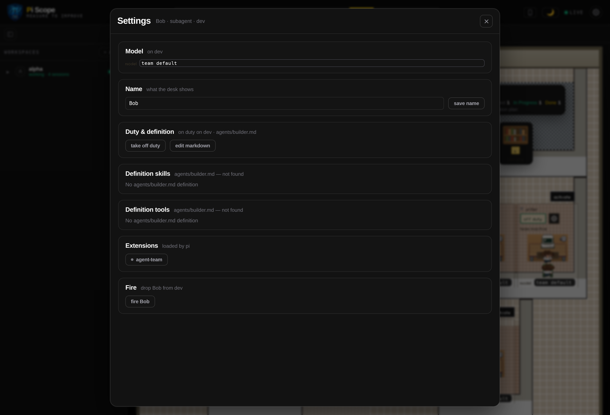
Walkthroughs recorded on a live instance: the full showcase (one unbroken take through all ten views, from the current build)
why it's different
Close to a terminal log in its privacy, close to a cloud tracer in its fidelity — and the only one of the three that lets you reach into the run.
| Capability | Pi Scope | Cloud LLM tracers | Terminal / chat logs |
|---|---|---|---|
| Runs locally, no account | ✓ | ✗ | ✓ |
| Nothing leaves your machine | ✓ | ✗ | ✓ |
| Live watching of agent actions | ✓ | traces only | scrolling text |
| Replay past sessions | ✓ | ✓ | ✗ |
| Control surface — shell, file edit, git | ✓ | ✗ | manual, elsewhere |
| Coding-agent aware — tool calls, cwd, context % | ✓ | LLM-centric | ✗ |
| Exact LLM request args captured | ✓ | varies | ✗ |
| Zero-install AppImage with bundled Node | ✓ | n/a | n/a |
| Open source | ✓ | varies | ✓ |
built for
One server, one SQLite file, no account. Nothing is uploaded anywhere, and the
database is created mode 0600. Delete a session from the sidebar or
DELETE /sessions for everything.
Every header view is a plugin. Drop a folder with a plugin.json into
~/.pi-scope/plugins/ and it gets a view, its own HTTP routes, an event
hook and persistent JSON state.
Tool calls with exit codes, the shell's live working directory, context-window usage, compactions, model switches and branch navigation — the parts a generic tracer throws away.
install
Node 24+ is the only real requirement — Pi Scope uses node:sqlite, which
ships inside it, so there are no native build steps. Linux, macOS and Windows run the
same server and dashboard.
Linux desktop · nothing to install
chmod +x Pi-Scope-*.AppImage
./Pi-Scope-*.AppImage~/.pi-scope/Linux & macOS · downloads the app, checks Node
curl -fsSL https://raw.githubusercontent.com/
NerdAtWork24X7/Pi_Scope/main/install.sh | sh
cd Pi_Scope && ./Start.shgit needed./Start.sh --web for a headless serverinstall.ps1 one-linerAny OS · Node.js 24+
git clone https://github.com/
NerdAtWork24X7/Pi_Scope.git Pi_Scope
cd Pi_Scope && ./Start.sh --devnpm run dev adds --watchdb/scope.dbSeed a realistic demo session — a coder adding dark mode, its tester subagent, and a second project with a failing command:
node docs/seed-demo.mjsfaq
pi agent?+
The bundled agent is pi and Pi Scope ships its own copy of it, so Chat,
the commit-message generator and the in-browser terminal work with nothing to
install. But the server is agent-agnostic: anything that can POST JSON to
/events can feed it, which is about ten lines of script.
db/scope.db in development, ~/.pi-scope/
when packaged — created with permissions 0600. Session data never
leaves it unless you export it.
SCOPE_HOST=0.0.0.0. A QR code in the header opens a
purpose-built mobile layout — sessions, transcript, composer and stop — on any device
on the same network. It does not download the desktop bundle, and it exposes a shell
to that network, so only do it somewhere you trust.
One command, one local database, and the next run your agent makes is a record you can read, replay and step into.